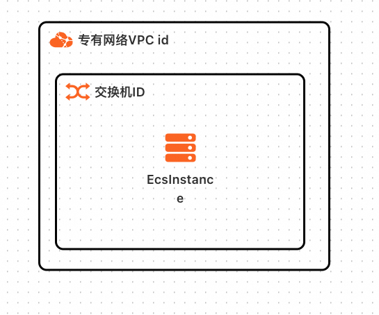
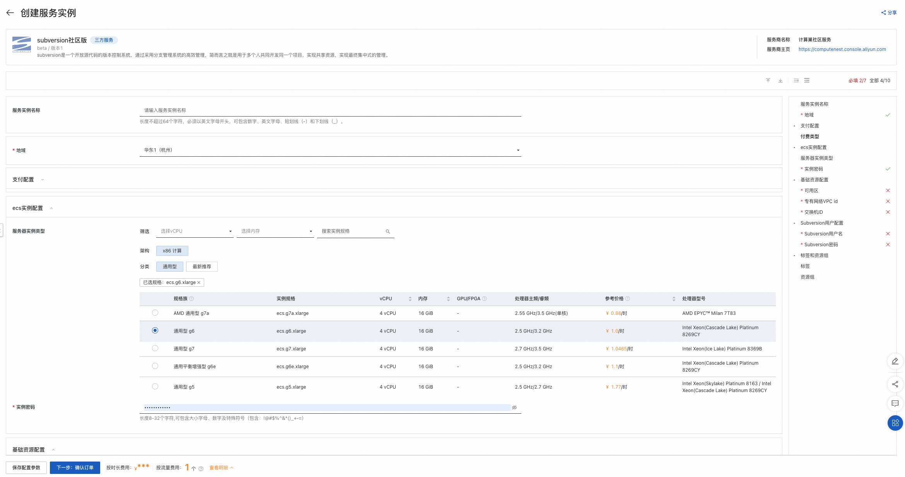
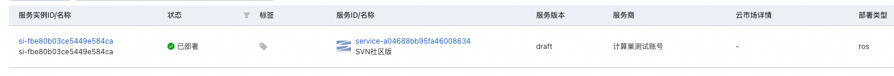
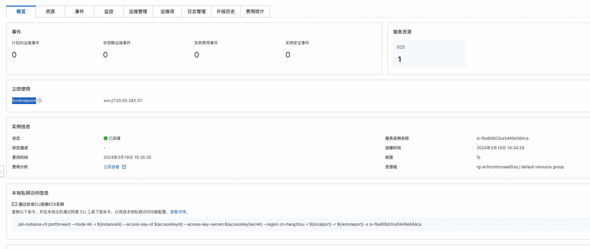

Subversion服务私有化一键部署文档
概述
Subversion是一个开放源代码的版本控制系统，通过采用分支管理系统的高效管理，简而言之就是用于多个人共同开发同一个项目，实现共享资源，实现最终集中式的管理。
计费说明
Subversion服务在计算巢上部署的费用主要涉及： - 所选vCPU与内存规格 - 磁盘容量
计费方式包括 - 按量付费（小时） - 包年包月
部署架构
Subversion是单机部署架构

RAM账号所需权限
Subversion服务需要对ECS、VPC等资源进行访问和创建操作，若您使用RAM用户创建服务实例，需要在创建服务实例前，对使用的RAM用户的账号添加相应资源的权限。 添加RAM权限的详细操作，请参见为RAM用户授权。所需权限如下表所示。
| 权限策略名称 | 备注 |
|---|---|
| AliyunECSFullAccess | 管理云服务器服务（ECS）的权限 |
| AliyunVPCFullAccess | 管理专有网络（VPC）的权限 |
| AliyunROSFullAccess | 管理资源编排服务（ROS）的权限 |
| AliyunComputeNestUserFullAccess | 管理计算巢服务（ComputeNest）的用户侧权限 |
| AliyunCloudMonitorFullAccess | 管理云监控（CloudMonitor）的权限 |
部署流程
部署步骤
单击部署链接， 进入服务实例部署界面，根据界面提示，填写参数完成部署。
部署参数说明
您在创建服务实例的过程中，需要配置服务实例信息。下文介绍Subversion社区版服务实例输入参数的详细信息。
| 参数组 | 参数项 | 示例 | 说明 |
|---|---|---|---|
| 服务实例名称 | test | 实例的名称 | |
| 地域 | 华东1（杭州） | 选中服务实例的地域，建议就近选中，以获取更好的网络延时。 | |
| 支付配置 | 付费类型 | 按量付费 或 包年包月 | |
| ECS实例配置 | 实例类型 | ecs.g6.large | 实例规格，可以根据实际需求选择 |
| ECS实例配置 | 实例密码 | ** | 设置实例密码。长度830个字符，必须包含三项（大写字母、小写字母、数字、()`!@#$%^&*-+={}[]:;'<>,.?/ 中的特殊符号） |
| 基础资源配置 | 部署区域 | 可用区I | 地域下的不同可用区域 |
| 基础资源配置 | VPC ID | vpc-xxx | 选择专有网络的ID。 |
| 基础资源配置 | 交换机 | vsw-xxx | 选择交换机ID。若找不到交换机, 可尝试切换地域和可用区 |
| Subversion用户配置 | Subversion用户名 | svn_user | |
| Subversion用户配置 | Subversion密码 | svn_password |

验证结果
查看服务实例。 服务实例创建成功后，部署时间大约需要1分钟。部署完成后，页面上可以看到对应的服务实例。

进入服务实例概览页后，可以通过SvnEndpoint和设置的Subversion用户名访问Subversion服务。

使用Subversion服务
请访问Subversion官网了解如何使用Subversion：Subversion官网
© 2009-2022 Aliyun.com 版权所有